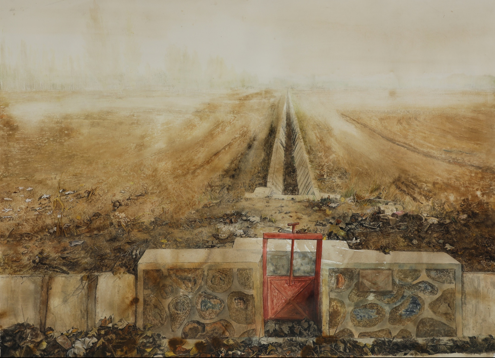

When All Things Remain Unspoken
当万物保持沉默

- Artwork ID / 作品编号
- KW-W-000022
- Year / 年份
- 2024
- Medium / 媒介
- Watercolor on paper / 纸本水彩
- Dimensions / 尺寸
- 84 × 112 cm (H × W / 高 × 宽)
About the work / 作品介绍
When All Things Remain Unspoken constructs an open field through an expansive plain, a road extending toward the horizon, and a red gate in the foreground. The road offers no fixed destination, while the gate links the visible terrain to a space not yet reached. Low-contrast earth, mist, and light slow the act of looking, allowing scale and distance to emerge gradually. The work attends to the relation between people and the world before language intervenes: things remain silent yet specific through position, weight, color, and interval.
《万物未言》以辽阔原野、远伸的道路和前景中的红门建立开放结构。道路没有给出明确终点，红门则把可见之地与尚未抵达的空间连接起来。低对比度的土地、雾气和光线减缓观看速度，使尺度与距离逐渐显现。作品关注语言介入之前人与世界的联系：事物凭借位置、重量、颜色与彼此间隔，保持沉默而具体的存在。